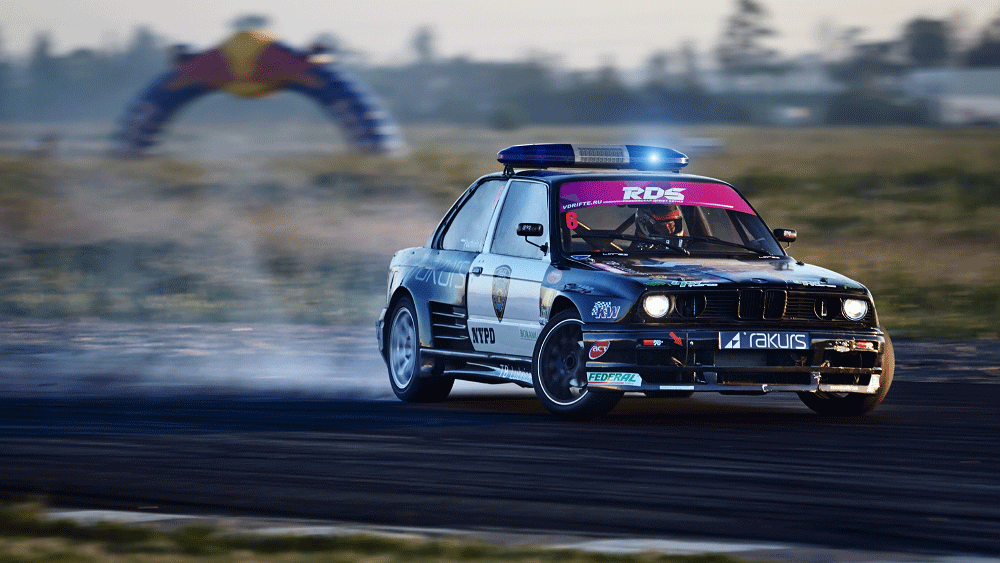

Дорбо пожаловать на блог о дрифте!
Главная страница.
Вернуться назад.
Hand braking drift
Дрифт с использованием ручного тормоза. Эта техника является наиболее простой и предпочтительной для обучения дрифта. Не рекомендуется приступать к изучению других техник, не освоив данную технику в полной мере. Она является важной даже для профессионалов, так как позволяет исправить допущенные ошибки при недостаточной поворачиваемости, когда другие техники уже не помогают. Техника такова: для вызова заноса нужно выжать педаль сцепления, сильным рывком ручного тормоза отправить заднюю ось в занос, после чего отпустить педаль сцепления. Важно при этом поддерживать обороты двигателя при выжатом сцеплении. Нужно научиться выбирать скорость и силу рывка ручного тормоза, в зависимости от ситуации. Это может быть даже серия корректирующих траекторию рывков. Данной технике можно обучаться на маломощном заднеприводном авто, даже без блокировки дифференциала. Желателен гидравлический ручник, если конструкция заводского быстро приводит к обрыву или растяжению тросов.
Clutch Kick
Резкое бросание сцепления. Благодаря быстрому выжиманию и бросанию педали сцепления при поддержании высоких оборотов двигателя, возникает кратковременный избыток мощности, который срывает заднюю ось в занос.
Yorin drift
Скольжение со срывом четырех колес. Торможение в повороте скольжением со сносом всех четырех колес, когда машина полностью срывается в середине поворота.
Kanteria / feint drift
Раскачка, или «Хлыст». Занос, при помощи которого проходятся S-образные повороты (сиканы, шиканы). Когда занос в одну сторону является подготовкой для поворота в другую. Такая техника используется в ралли.
Braking Drift
Бездушным торможением. Во время выполнения этого приема, тормоз нажимается во время вхождения в поворот и полностью отпускается по достижении точки «апекс», благодаря чему вес машины смещается, что приводит к потере сцепления задними колесами. Затем занос контролируется с помощью рулевого колеса и подачами газа.
Dynamic drift
Динамический дрифт. Осуществляется путём резкого сброса газа на въезде в длинный поворот, корректировок рулём и своевременным поддержанием заноса короткими нажатиями на тормоз. В основном ориентирован на профессионалов ввиду высокой опасности такой техники. С помощью этого приёма, вы сможете Дрифтовать даже на велосипеде.
Power over drift
Избыточная мощность. Этот вид дрифта используется на машинах с высокой мощностью. Для входа в силовой занос нужно вывернуть руль в ту сторону, куда нужно направить машину, и нажать на газ до упора. Благодаря высокой мощности двигателя, задние колёса потеряют сцепление с дорогой. Чтобы выйти из поворота не повредив машину нужно отпустить газ, но не до конца, и повернуть руль в противоположную сторону.
Side braking drift
Боковое скольжение. Вариант дрифта, когда происходит срыв задних колес и машина скользит почти боком.
Fast drift
Высокоскоростной дрифт. Отличается от показательного дрифта скоростью прохождения поворотов в заносе и корректировок рулём. Такая техника приемлема для тренировок и выступлений на специально ориентированных трассах. Как правило, при высокоскоростном дрифте корректировки рулём меньше, чем при обычном дрифте, за счёт чего увеличивается ресурс покрышек.
Chokudori
Обычно используется после проезда прямого участка дороги, чтобы снизить скорость и выполнить глубокий занос. Торможение посредством скольжения и выставления машины под нужным углом относительно дороги для наиболее выгодного прохождения самого поворота.
Manji
Выполняется на прямой дороге, когда водитель раскачивает машину от одной стороны дороги до другой. Обычно используется на показательных выступлениях по дрифтингу. Мандзи является подготовкой для выполнения очень многих техник, таких как тёкудори и инерционный занос. Широко используется в ОАЭ.
Главная страница.

Вернуться назад.